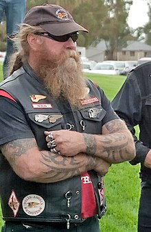

Ба́йкери (англ. biker, від bike ← motorbike ← motorbicycle «мотоцикл», Рокер) — члени мотоклубу, прихильники мотоциклу не просто як засобу пересування, а як невіддільної частини певного стилю життя, життєвих цінностей та кодексу правил. Відтак майже кожний байкер є мотоциклістом, але не кожен власник двоколісної техніки може бути віднесений до числа байкерів. Колись чопер мав вкрай погану репутацію. Звук гучного V-подібного двигуна цих величезних довгастих за формою мотоциклів, що були перероблені зверху до низу, наприкінці 40-х років 20ст. обіцяв самі лише неприємності. Добровольчий корпус американських пілотів в Китаї з доброго почину журналістів почали називати «Летючими тиграми», та й самі вони з задоволенням давали гучні назви своїм ескадрильям. Наприклад, «Янголи пекла». Одним із загонів цієї ескадрильї командував Арвід Ольсен, відомий своєю любов'ю до моторів і мотоциклів. Саме завдяки йому найвідоміший клуб в історії байкерського руху отримав це авіаційне ім'я.
Янголи Пекла (англ. Hells Angels) — найбільший у світі мотоклуб байкерів із підрозділами по всьому світу. Входить, поряд з «Outlaws MC», «Mongols MC» і «Bandidos MC», у так звану «Велику четвірку» outlaw-клубів і є найбільш відомим серед них. Правоохоронні органи ряду країн називають клуб «бандою мотоциклістів» і звинувачують у торгівлі наркотиками, рекеті, торгівлі краденим тощо. Члени клубу стверджують, що є мирними ентузіастами мотоциклів, які об'єдналися для спільних мотопробігів, зборів і проведення громадських заходів. Відомо також що з 1994 по 2002 у провінції Квебек сталася хвиля насильства пов'язана із переділом сфер впливу у вуличній торгівлі наркотиками відома під назвою 'Квебекська байкерська війна', в якій загинуло близько 150 людей.
Саме в цей час на Західному узбережжі США формується байкерський рух, і в Каліфорнії Стурджес влаштовує Перший зліт мотоциклістів. В ці пори до лав байкерів вливаються військові пілоти з розформованої ескадрильї «Янголи пекла», що з-замолоду звикли до швидкості та адреналіну. Вони пересіли на мотоцикли й заснували однойменну байкерську організацію. Спочатку вони іменувалися «ROVER», потім з'явилася назва «ROCKERS», а трохи згодом виникла вже звична назва «BIKERS». До нещодавна поняття «байкер» поширювалося винятково на власників чопперів і неодмінно асоціювалося з винесеним далеко вперед переднім колесом мотоциклу, великою кількістю хромованих частин байку, оздобленнями зі шкіри та довгим волоссям й бородою мотоцикліста. Однак, з кінця 90-х років на дорогах все частіше стали з'являтися мотоцикли з високошвидкісними двигунами і поліпшеною за рахунок пластикових обтічників аеродинамікою — спортбайки. Протягом тривалого часу спортбайкери не визнавалися «справжніми» байкерами як члени байкерської спільноти. Навіть такий жест, як вітальне підняття руки при зустрічі на дорозі, на них не поширювався. Причина такої конфронтації полягала у іншій посадці мотоцикліста та іншій манері керування. Висока швидкість спортбайку та сам мотоцикліст в повному екіпіруванні, більше схожий на космонавта у скафандрі, в розумінні байкерів старої формації аж ніяк не збігалися з виглядом справжнього байкера.
